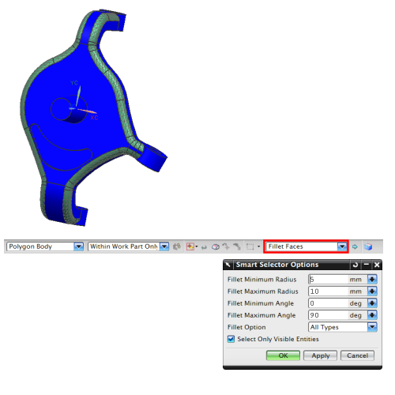

在模型上创建 2D 网格时，您可能想要使用不同的准则（例如，与用于剩余几何体不同的单元大小）在圆角或圆柱体曲面上创建网格。
对于 2D 网格，您可以使用圆角面和圆柱面选择方法结合 2D 网格对话框中的选项来控制圆角和圆柱体上的网格生成。

对于 2D 网格，当使用圆角面或圆柱面选择方法时，如果软件检测到任何满足指定准则（由您在智能选择器选项中定义）的曲面，则软件将在 2D 网格对话框中显示附加的选项。